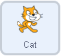
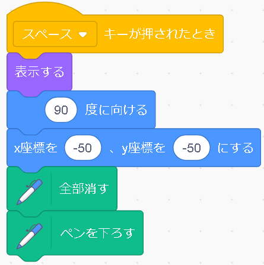
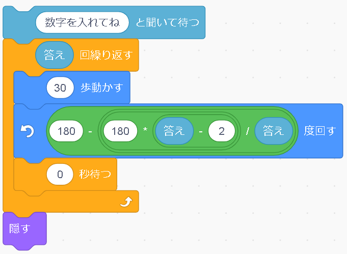

いろんな正多角形を書こう


正多角形を扱う単元で使用できるものです。広く知られていて、代表的なものが、正多角形を作図するものなのですが、角度や長さをプログラムに直接書くものが多いので、これを、何角形にするかという指定だけすれば、猫さんが勝手に作図してくれるというものです。
プログラムするスプライト |
|
プログラム解説 |
|
|  |
まず正多角形を描く準備をします。
|
|  |
準備ができたら、次に正多角形を書くプログラムです。まず、何角形を書きたいか数字を入力してもらうようなブロックをおき、そこに入力された数字はどこに行くかというと、このブロックの下に、[答え]と書かれた変数が用意されていて、そこに格納されます。なので、この入力された数字をプログラムで呼び出したいときに、[答え]と指定していきます。 次は、繰り返しのブロックが来ています。中を見ると、0歩動かし、計算した結果の数分回転させるを繰り返します。この緑色ところは、内角の公式を表しています。多角形の数字を入れるところに、答えの変数を使うことで、指定した数の正多角形がかけるというわけですね。このプログラムの次に[0秒まつ]とありますが、ゼロ秒だと待ててないし、無しでも動いたので、なくてもいいのかなと思います。繰り返しの回数の指定は、書きたい正多角形の角の数とおなじ辺の数が必要なので、また＜答え＞を使用しています。繰り返しですべて書き終わった後、[隠す]のブロックで猫さんを隠すことで、書き終わった図形がしっかり見えるようになります。 |